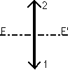
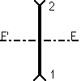

Lentille mince paraxiale

ou 
(convergente ou divergente)
Définition
Elle est définie par les points 1 et 2 et le foyer F (ou F', peu
importe) (ou la focale f').
La lentille peut être ajoutée:
- en cliquant sur le bouton de la barre d'outil ayant la forme ci-dessus,
puis en faisant un clic simple pour saisir le premier point, puis en faisant
un clic simple pour saisir le second (ne pas maintenir le bouton de la
souris enfoncé entre les deux points), puis un dernier clic pour
saisir la position du foyer.
OU
- menu "Ajouter" puis "Système optique idéal" puis "Lentille
mince convergente" ou "Lentille mince divergente". On donne alors les coordonnées
des points 1 et 2, puis la valeur de la focale.
Options
On peut imposer
- que l'axe focal soit tracé ou non
-l'épaisseur et la couleur du trait représentant la lentille
à l'écran
- la couleur du trait représentant l'axe focal à l'écran
Ces propriétés peuvent être rendues accessibles:
- à la construction du miroir si on passe par le menu "Ajouter"
- à tout instant en cliquant sur le bouton "Propriétés"
de la barre d'outil, puis en cliquant sur un des cercles bleus qui apparaissent
sur l'élément dont on veut obtenir les propriétés;
ne pas oublier à la fin de cliquer sur le bouton "Fin prop." de la
barre d'outil pour quitter le mode propriétés.
Divers
Comme la lentille est représentée à l'écran
par son schéma conventionnel plan, les normales et angles ne peuvent
être affichés sur sa surface. Comme c'est une idéalisation
d'une lentille réelle, les surfaces d'onde issues d'une source ponctuelle
ou plane ne pourront être tracées si une telle lentille fait
partie de la simulation.
A noter que les rayons suivent les régles habituelles de tracé
des lentilles minces, même s'ils ne sont pas paraxiaux...
Retour à la page
d'accueil